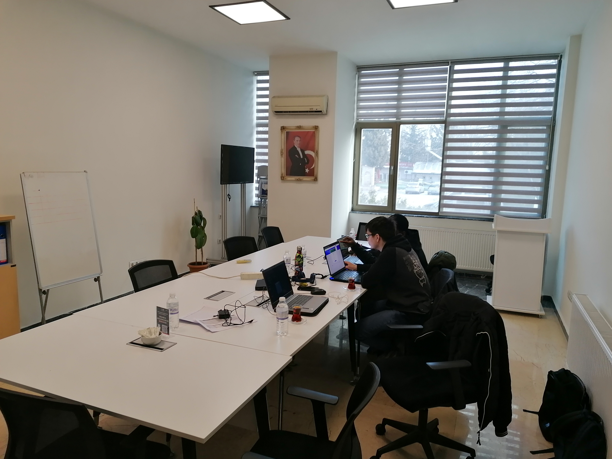
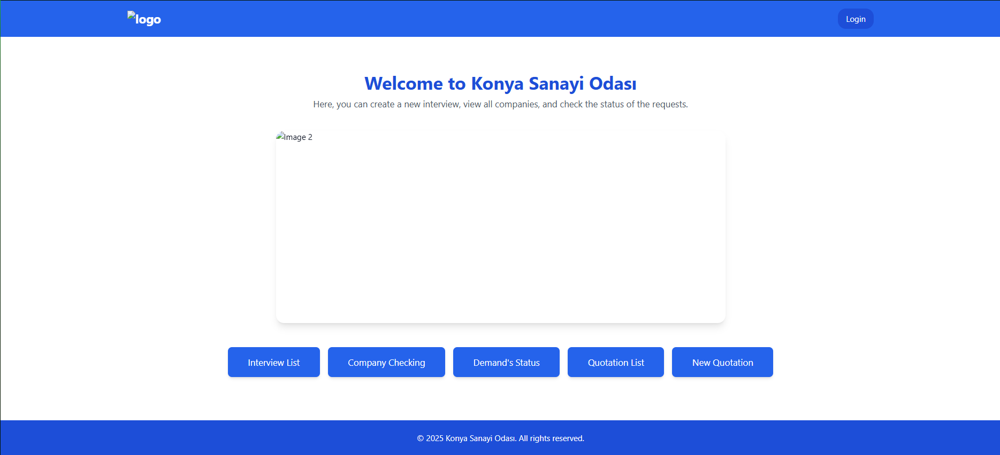
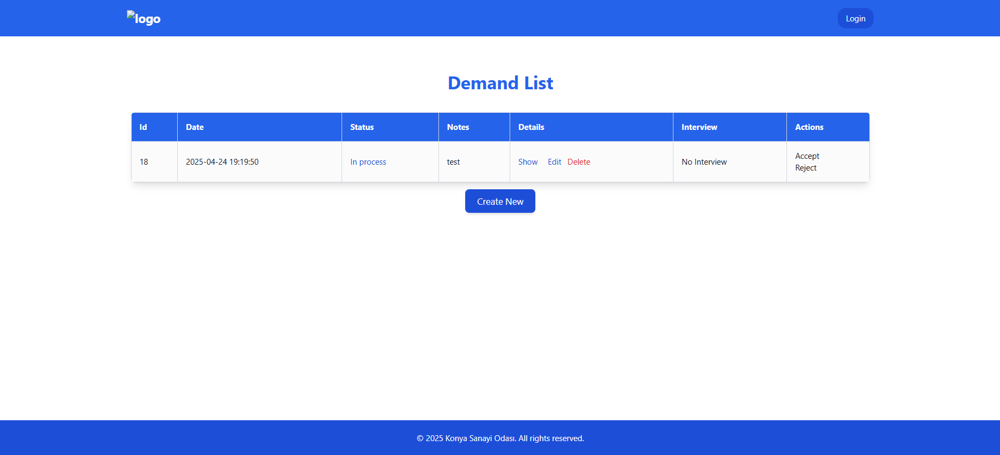
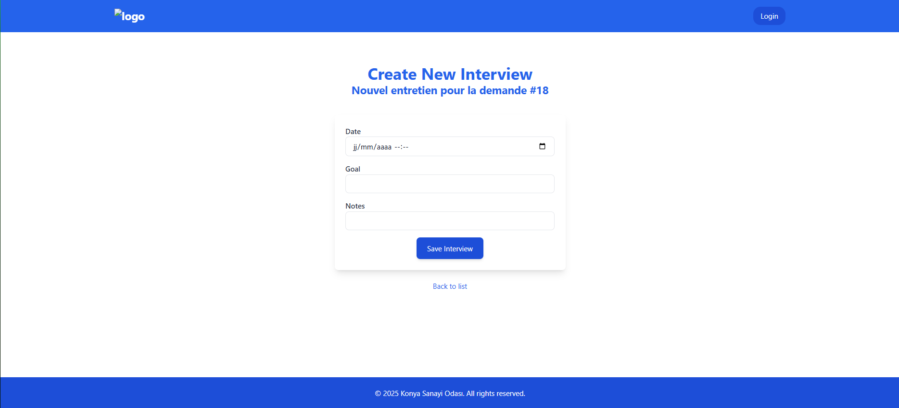
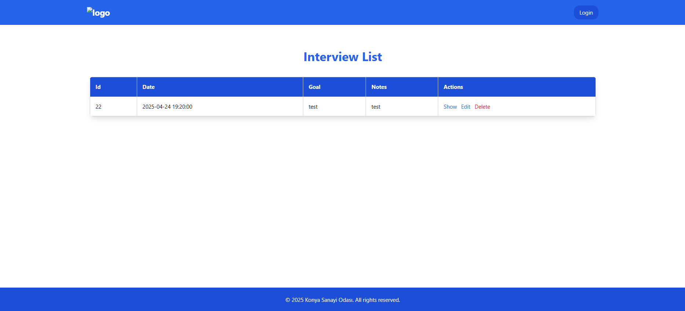

Chambre Industriel de Konya

Contexte
La Chambre d'Industrie de Konya (Konya Sanayi Odası, KSO), fondée en 1974, est une institution clé du développement industriel de la région de Konya, en Turquie. Elle regroupe plus de 2 400 entreprises membres réparties en 24 comités sectoriels, représentant des domaines variés tels que la défense, le médical, les systèmes ferroviaires, l'énergie, le logiciel, la santé et la logistique .La Chambre d’Industrie de Konya représente les industriels de la région, soutient leur développement économique, et facilite leur transition numérique et écologique. Elle offre divers services aux entreprises comme la formation, l’aide à l’exportation, et la promotion de l’innovation. Elle joue un rôle clé dans la modernisation de l’industrie locale et la défense des intérêts du secteur.
Missions
- Accompagner le client
- Créer une application répondant aux besoins du client
Le site en quelques photos

